Designing interfaces that disappear. Making tools that feel like quiet partners — supporting complex human interactions through simple, elegant form.
My design philosophy is driven by a commitment to minimising cognitive load — making digital interfaces feel almost invisible. Great design fits seamlessly into a user's existing workflow, feeling like a natural extension of what they're trying to do.
I follow a structured process built around divergence and convergence. In the divergence phase, I explore without immediately judging — creating space for creativity and unexpected solutions. Convergence brings rigour: every concept tested against real environmental constraints.
I intentionally reject tools that introduce unnecessary mental clutter. Instead I use haptic feedback, spatial audio, and spatial layout to guide users without overwhelming them. Design should feel like a quiet partner.
A live web experience where each group member's button reveals their personality through a shared theatre metaphor — unified by a stage, distinguished by individual character.
Subgroup B01-4 explored rough low-fidelity sketches before the merge: buttons that grow with clicks, buttons that travel the canvas, buttons that vanish and respawn after a cooldown. The goal was breadth, not refinement.
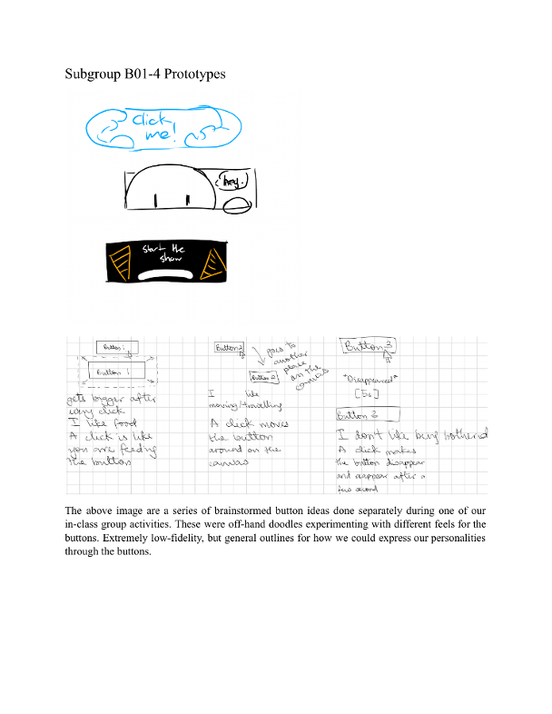
A dark theatre stage framed by red velvet curtains. Four buttons below the stage each launch a personal slideshow. At the end all buttons celebrate together — a deliberate choice reflecting our collaborative dynamic.
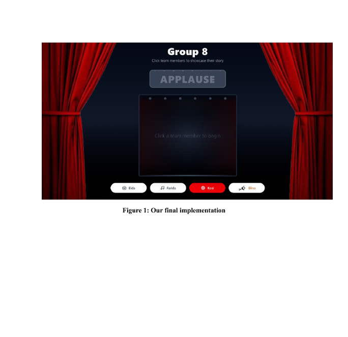
I designed the "Kosi" button — red for energy and confidence, with a popcorn icon tying into the Movie & Show theme I proposed in the first joint session. I introduced the explode-then-respawn mechanic, adding playful unpredictability that reflects my personality.
A peer-to-peer Blender guidance system that keeps novices in their workspace, directing them through spatial audio pings and peripheral edge-glow cues instead of disruptive screen switches.
We explored hot/cold cursors, spatial audio, proximity indicators, expert annotation dashboards, and peer-to-peer views before converging on the dual-modality approach: audio for 3D, edge-glow for 2D UI elements.
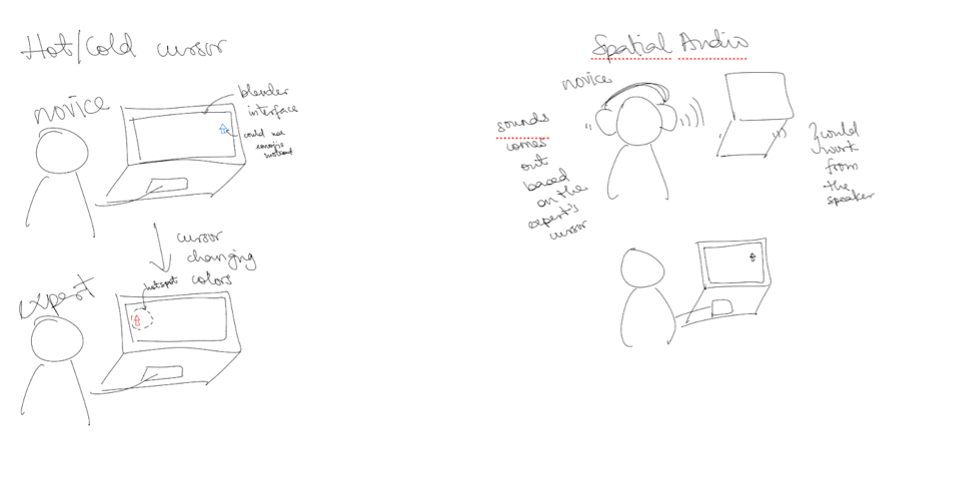
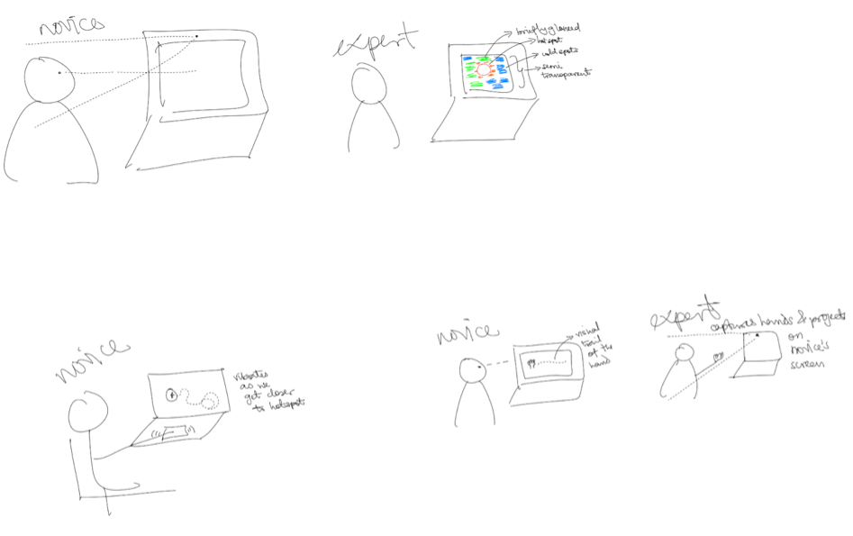
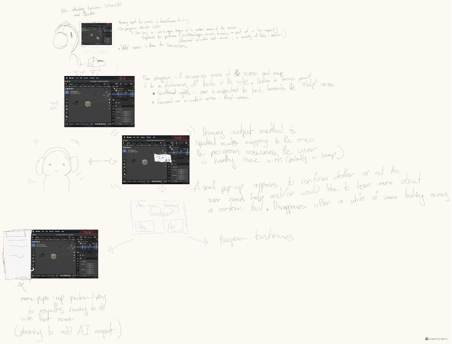
The expert drops notes in World Space or UI Element mode via a peer-to-peer WebRTC connection. The novice says "Marco" to trigger a spatial audio ping; moving closer raises the pitch and pans toward center.
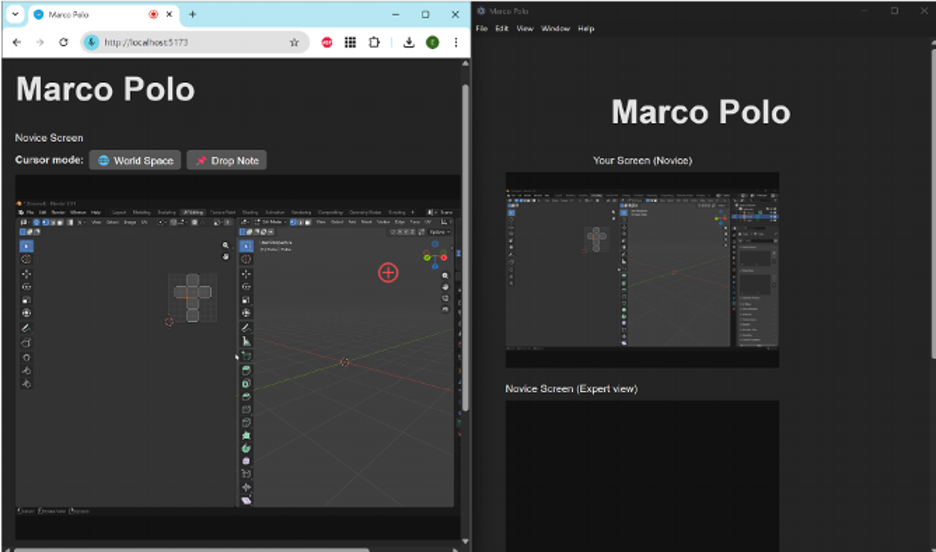
A 3D-printed sensor-equipped cup with an OLED screen and colour-coded LEDs that eases small talk at social events — a lightweight, portable conversation starter.
Conversation Plate, Energy Checker Sphere, Pacing Plate & Cup, Temperature-Aware Bowl. After evaluation all four were rejected — the rejections sharpened the criteria I brought into the group meeting.
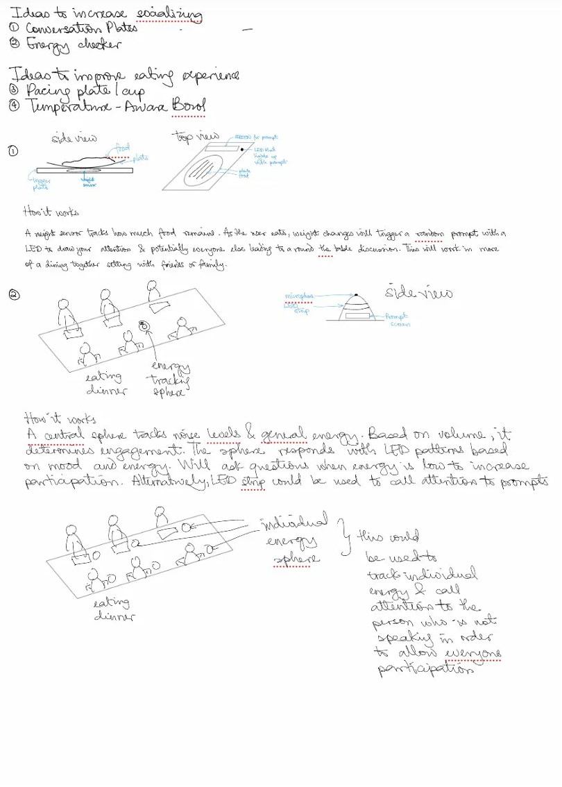
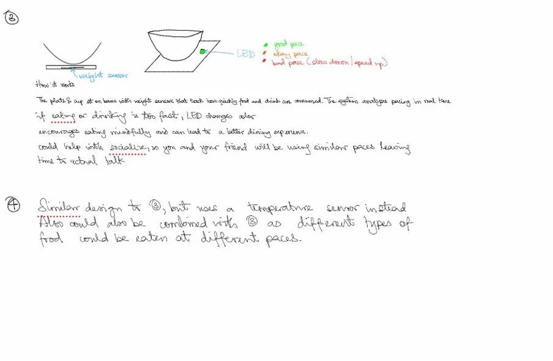
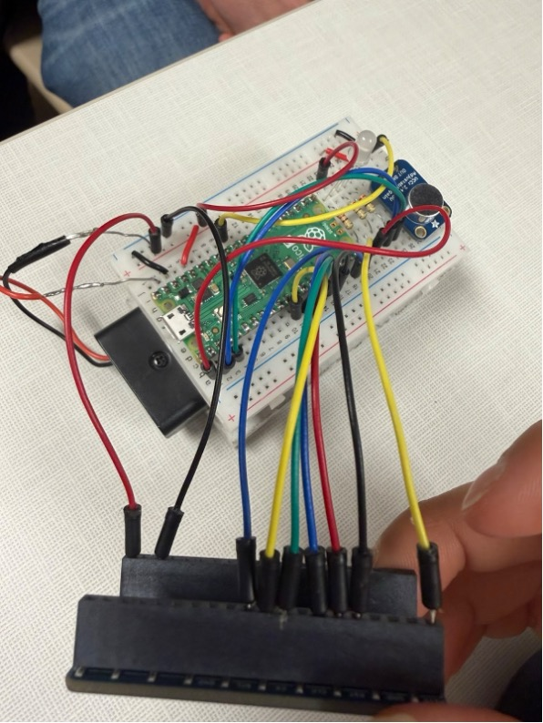
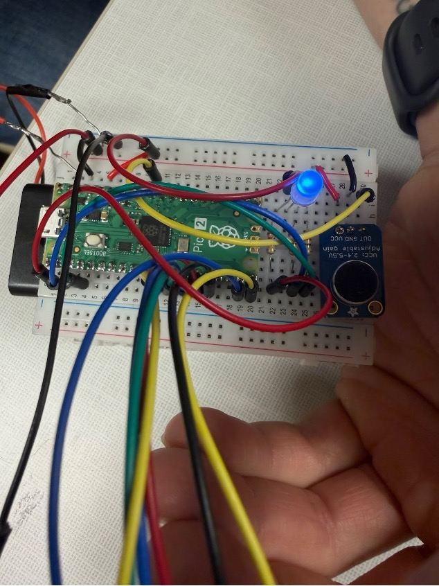
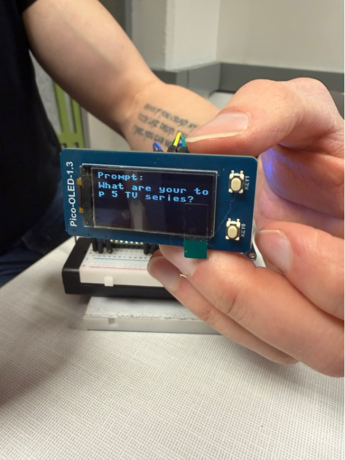
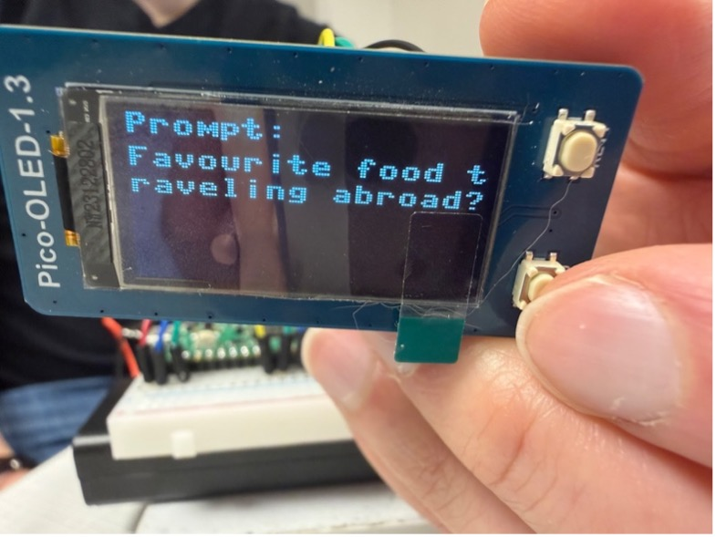
My perspective on HCI has expanded from visual affordances to treating audio, haptics, peripheral cues, and embodied metaphors as equally important parts of the design space.
No longer just a course concept — a practical way to balance creative exploration with real-world constraints. In a dense 3D environment, the wrong modality actively worsens the experience.
Documenting limitations and failures is just as important as highlighting successes. What didn't work, why it didn't, and what I'd do differently — that's where a real design philosophy comes through.